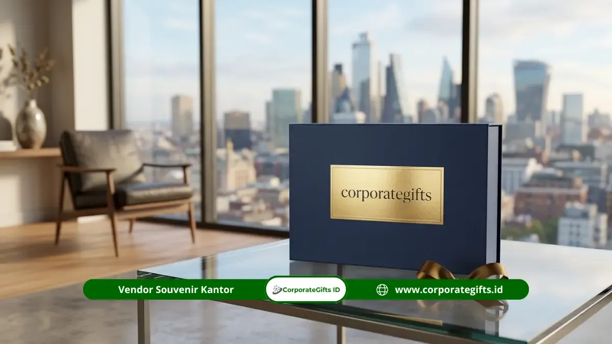

Corporate Gifts ID - Souvenir BUMN untuk acara protokoler resmi adalah produk custom bermutu tinggi yang diberikan pada momen formal seperti RUPS, penandatanganan MoU, atau kunjungan delegasi kenegaraan. Souvenir ini berfungsi sebagai simbol penghormatan sekaligus penguat identitas institusi negara di hadapan tamu dan mitra strategis. Pemilihannya wajib mempertimbangkan kualitas material, kesesuaian protokol acara, dan kesan profesional yang konsisten dengan citra korporat.
Dalam setiap penyelenggaraan agenda resmi kedinasan, cinderamata protokoler menjadi cerminan tata kelola profesional dan martabat organisasi. Kualitas fisik dari cinderamata yang diserahkan menjadi representasi langsung dari keseriusan dan integritas organisasi BUMN yang bersangkutan.
Poin Kunci Souvenir Protokoler BUMN:
- Standar Wibawa Negara: Souvenir protokoler merepresentasikan kredibilitas institusi BUMN di hadapan menteri, dewan komisaris, dan delegasi luar negeri.
- Material Kelas Satu: Wajib menggunakan bahan berdaya tahan tinggi seperti kulit asli, kristal optik, kayu mahoni/jati, atau metal SUS 304 berukir laser.
- Kepatuhan Pedoman Brand: Penempatan logo dan warna korporat wajib mematuhi panduan corporate brand identity BUMN secara presisi.
- Manajemen Waktu Ketat: Pemesanan ideal dilakukan 3 hingga 6 minggu sebelum acara demi memastikan tahapan proofing sampel dan quality control tanpa cacat.
Apa Itu Souvenir Protokoler BUMN dan Kapan Dibutuhkan
Souvenir protokoler BUMN adalah seperangkat produk cenderamata resmi yang dirancang dan diproduksi dengan standar estetika tinggi untuk diserahkan dalam tata urutan upacara atau forum kedinasan formal. Berbeda dengan merchandise promosi massal yang berorientasi pada volume sebaran luas, souvenir protokoler menitikberatkan pada eksklusivitas, makna simbolis, dan presisi detail.
Tugas penyusunan dan pengadaan cinderamata ini umumnya dipegang oleh unit Corporate Secretary (Corsec), Protokoler Direksi, atau Divisi Hubungan Masyarakat (Humas). Merujuk pada data riset dari Promotional Products Association International (PPAI), mayoritas institusi korporasi dan kenegaraan global tetap mengalokasikan anggaran khusus untuk promotional product pada acara resmi tahunan mereka guna membangun goodwill dan memperkuat ikatan kemitraan jangka panjang.

Kemasan magnetic hardbox mewah berlapis plat kuningan deboss emas yang memenuhi standar pengemasan cinderamata protokoler BUMN.
Momen Resmi BUMN yang Membutuhkan Souvenir Khusus
Kebutuhan cinderamata protokoler di lingkungan Badan Usaha Milik Negara dapat dipetakan ke dalam beberapa momentum krusial yang memiliki karakteristik audiens berbeda:
- RUPS dan Rapat Koordinasi Dewan Komisaris: Forum pengambilan keputusan tertinggi perusahaan ini memerlukan paket souvenir eksklusif seperti Executive Director Gift Set yang berisi agenda kulit berlogo deboss emas, pulpen tanda tangan bermaterial logam berat, serta laporan tahunan berpenjilidan mewah.
- Penandatanganan MoU dan Perjanjian Kerja Sama Strategis: Momen kemitraan bilateral menuntut plakat etsa kuningan pada dudukan kayu mahoni solid atau plakat kristal optik dengan ukiran grafir 3 dimensi yang menampilkan logo kedua belah pihak secara berimbang.
- Kunjungan Kerja Pejabat Kementerian dan DPR RI: Cinderamata bernuansa warisan budaya nusantara (seperti kain tenun/batik premium dalam kotak kayu berukir) yang dipadukan dengan produk teknologi modern menjadi pilihan utama untuk menghormati delegasi kenegaraan.
- Kunjungan Tamu Internasional dan Investor Asing: Paket souvenir yang menggabungkan cita rasa lokal bernilai seni tinggi dengan fungsi kerja harian (seperti coffee set artisan nusantara dan smart tumbler SUS 304) memberikan kesan hangat sekaligus profesional.
Kriteria Souvenir yang Sesuai Standar Protokoler
Agar tidak menyalahi etika keprotokolan dan tetap menjaga citra terhormat lembaga, ada beberapa parameter baku yang wajib dipenuhi oleh tim pengadaan:
- Kualitas Material Tanpa Kompromi: Hindari material plastik tipis atau bahan sintetis yang mudah terkelupas. Pilihlah bahan berdaya tahan puluhan tahun seperti kayu jati, kristal tebal, kulit sapi asli, atau logam stainless steel bersertifikasi food grade.
- Kepatuhan Ketat pada Brand Guidelines: Penempatan logo BUMN, rasio jarak aman (clear space), serta akurasi kode warna korporat (Pantone/CMYK) harus diuji secara presisi agar tidak terjadi distorsi identitas visual.
- Kemasan Eksklusif dan Rapi (Rigid Packaging): Souvenir protokoler tidak boleh diserahkan dalam tas belanja biasa. Wajib menggunakan hardbox berlapis linen atau beludru dengan busa die-cut presisi (custom foam insert) yang mengunci barang tetap aman saat dibawa bepergian.
- Kelengkapan Kartu Apresiasi Resmi: Setiap paket cinderamata harus disertai kartu ucapan bertinta emas (gold foil) yang ditandatangani oleh Direktur Utama atau Sekretaris Perusahaan.
Tabel Rekomendasi Souvenir Protokoler Berdasarkan Jenis Acara
Berikut adalah panduan kurasi paket cinderamata protokoler yang disesuaikan dengan jenis acara, target penerima, dan estimasi waktu produksi:
| Jenis Acara Resmi | Target Audiens | Rekomendasi Paket Souvenir | Karakteristik Material | Estimasi Waktu Pengerjaan |
|---|---|---|---|---|
| RUPS Tahunan BUMN | Pemegang Saham, Dewan Komisaris, Direksi | Executive Director Box Set (Pen Rollerball, Agenda Kulit Asli, Powerbank Metal) | Genuine Leather, Stainless SUS 304, Hardbox Magnetic Beludru | 14 - 21 Hari Kerja |
| Penandatanganan MoU / Kerja Sama | Pimpinan Instansi Rekanan, Lembaga Negara | Plakat Etsa Kuningan Kayu Mahoni + Signature Pen Set | Solid Wood Natural Lacquer, Pelat Logam Grafir Laser | 10 - 14 Hari Kerja |
| Kunjungan Kerja Delegasi Kementerian | Menteri, Pejabat Eselon I & II | Paket Cinderamata Wastra Nusantara + Smart Vacuum Flask LED | Kain Tenun Sutra ATBM, Stainless Double-Wall Termal | 14 - 25 Hari Kerja |
| Kunjungan Tamu Internasional / Investor | Delegasi Asing, Konsul Jenderal, C-Level Global | Client Appreciation Gift Box (Artisan Nusantara, Plakat Kristal 3D) | Optic Crystal K9, Custom Die-Cut Foam, Kartu Bilingual | 14 - 21 Hari Kerja |
| Pisah Sambut Pejabat & Purnabakti | Direksi Purnatugas, Pejabat Senior | Plakat Logam 3D Custom Logo Perusahaan + Jam Meja Kristal | Kuningan Cor Emas, Akrilik Tebal 20mm, Hardbox Eksklusif | 12 - 18 Hari Kerja |
Strategi Pengadaan Souvenir Protokoler Tepat Waktu
Jadwal acara protokoler BUMN sangat kaku dan tidak dapat diundur hanya karena keterlambatan vendor souvenir. Terapkan strategi operasional berikut agar proses pengadaan berjalan mulus:
- Wajib Membuat Proofing Sampel Fisik: Sebelum menyetujui pesanan massal ratusan paket, mintalah vendor untuk memproduksi 1 unit sampel fisik lengkap dengan kemasan akhir. Ini penting untuk menginspeksi ketajaman grafir, keaslian bahan, dan kenyamanan fungsi.
- Alokasikan Cadangan Waktu (Buffer Time): Tetapkan target penyelesaian produksi minimal H-7 sebelum hari pelaksanaan acara. Waktu cadangan ini berguna untuk mengantisipasi proses sortir dan distribusi ke lokasi acara.
- Pilih Vendor Berbadan Hukum Resmi & Ber-PKP: Pastikan penyedia jasa memiliki legalitas PT/CV lengkap, nomor rekening bank atas nama perusahaan, dan mampu menerbitkan Faktur Pajak e-Faktur resmi untuk keperluan kelengkapan administrasi SPJ dan LPJ instansi.
- Siapkan Unit Cadangan (Buffer Stock): Selalu tambahkan 5% hingga 10% unit ekstra di luar daftar undangan resmi untuk mengantisipasi kehadiran tamu kehormatan tambahan secara mendadak.
Kesalahan Umum dalam Memilih Souvenir BUMN yang Wajib Dihindari
Banyak kepanitiaan acara resmi yang terjebak dalam kesalahan teknis yang berisiko mempermalukan institusi. Waspadai poin-poin krusial berikut:
- Ukuran Logo yang Terlalu Mencolok (Overbranding): Pada acara protokoler dan penyerahan cinderamata VIP, penempatan logo yang terlalu besar justru mengurangi estetika barang. Terapkan teknik subtle branding seperti grafir laser bernuansa monokrom atau blind deboss pada kulit.
- Menggunakan Kemasan Tipis / Rapuh: Kotak kardus tipis yang mudah penyok saat ditumpuk akan merusak seluruh nilai kemewahan isi souvenir di dalamnya.
- Tidak Memperhatikan Etika Dual-Branding MoU: Menempatkan logo salah satu pihak dengan ukuran lebih kecil pada plakat perjanjian kerja sama dapat dianggap sebagai pelanggaran etika kesetaraan kemitraan.
- Pemesanan Mendadak (Rushed Order) Tanpa QC: Memaksakan pesanan instan dalam 2-3 hari berisiko tinggi menghasilkan produk cacat cetak atau lem yang belum mengering sempurna.
Kesimpulan dan Konsultasi Pengadaan
Souvenir BUMN untuk acara protokoler resmi adalah cerminan langsung dari reputasi, profesionalisme, dan wibawa korporasi milik negara di mata para pemangku kepentingan. Memilih cenderamata yang tepat membutuhkan perpaduan antara kualitas bahan kelas wahid, ketepatan detail identitas visual, kepatuhan tata krama protokoler, dan manajemen pengadaan yang terencana.
Dengan memilih paket souvenir yang dirancang khusus dan bekerja sama dengan vendor profesional berpengalaman, instansi Anda dapat memastikan setiap agenda seremonial berlangsung sukses dan meninggalkan kesan mendalam yang tak terlupakan bagi seluruh tamu kehormatan.